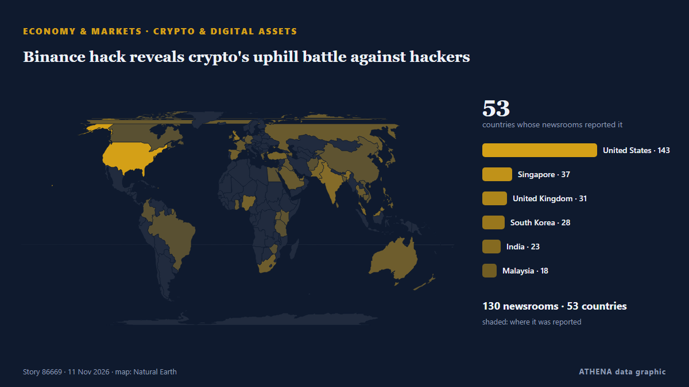

Économie, finance et marchés
SponsoriséPrésenté par  Cybernetics and Artificial Intelligence Lab Welcome to the Cybernetics and Artificial Intelligence Laboratory, established at the Department of Business Administration of the National and Kapodistrian University of Athens. The lab is headed by Professor Dimitrios Thomakos. The lab aims to do research that can be published in top venues. Our research uses tools and methods of Artificial Intelligence, and lies in the following areas: - Forecasting - Decision making - Cyber security - Finance We are always looking forward to collaborating with exceptional students!
Cybernetics and Artificial Intelligence Lab Welcome to the Cybernetics and Artificial Intelligence Laboratory, established at the Department of Business Administration of the National and Kapodistrian University of Athens. The lab is headed by Professor Dimitrios Thomakos. The lab aims to do research that can be published in top venues. Our research uses tools and methods of Artificial Intelligence, and lies in the following areas: - Forecasting - Decision making - Cyber security - Finance We are always looking forward to collaborating with exceptional students!
Les titres sont affichés en anglais, tels que publiés.
Veille des marchés - chiffres officiels
Dans quel sens évoluent les indicateurs officiels des marchés - hausse, baisse ou stabilité - avec la dernière valeur officielle et sa date, et l'actualité des marchés vérifiée par ATHENA. Valeurs officielles, pas des cours en temps réel.
Énergie
| 1 jour | 1 semaine | 1 mois | Valeur officielle | |
|---|---|---|---|---|
| Brent crude | ▼ | ▼ | ▼ | $107,03/bblDonnées officielles du 3 nov. 2026 |
| WTI crude | ▼ | ▼ | ▲ | $99,64/bblDonnées officielles du 3 nov. 2026 |
| US natural gas (Henry Hub) | ▬ | ▲ | ▼ | $3,00/MMBtuDonnées officielles du 11 nov. 2026 |
| European natural gas (1 mois · 3 mois · 12 mois)(1M · 3M · 12M) | ▲ | ▲ | ▲ | $25,49/MMBtuDonnées officielles du 1 sept. 2026 |
| Coal (Australia) (1 mois · 3 mois · 12 mois)(1M · 3M · 12M) | ▲ | ▲ | ▲ | $153,84/tDonnées officielles du 1 sept. 2026 |
Alimentation
| 1 mois | 3 mois | 12 mois | Valeur officielle | |
|---|---|---|---|---|
| Wheat | ▲ | ▲ | ▲ | $246,85/tDonnées officielles du 1 sept. 2026 |
Bourses américaines
| 1 jour | 1 semaine | 1 mois | Valeur officielle | |
|---|---|---|---|---|
| S&P 500 | ▲ | ▼ | ▼ | Direction seulement (indice © Cboe)Données officielles du 11 nov. 2026 |
| Nasdaq Composite | ▲ | ▼ | ▼ | Direction seulement (indice © Cboe)Données officielles du 11 nov. 2026 |
Taux, risque et dollar
| 1 jour | 1 semaine | 1 mois | Valeur officielle | |
|---|---|---|---|---|
| US 10-year Treasury yield | – | – | – | Pas de donnée officielle récente |
| Market volatility (VIX) | ▼ | ▲ | ▲ | Direction seulement (indice © Cboe)Données officielles du 11 nov. 2026 |
| US dollar, broad index | ▲ | ▲ | ▲ | 121,88Données officielles du 6 nov. 2026 |
L'euro face aux autres monnaies
| 1 jour | 1 semaine | 1 mois | Valeur officielle | |
|---|---|---|---|---|
| EUR/USD | ▼ | ▼ | ▼ | 1,1081 USDDonnées officielles du 12 nov. 2026 |
| EUR/GBP | ▬ | ▲ | ▼ | 0,8359 GBPDonnées officielles du 12 nov. 2026 |
| EUR/CHF | ▬ | ▲ | ▼ | 0,9232 CHFDonnées officielles du 12 nov. 2026 |
| EUR/JPY | ▼ | ▼ | ▼ | 176,96 JPYDonnées officielles du 12 nov. 2026 |
| EUR/CNY | ▼ | ▼ | ▼ | 7,3891 CNYDonnées officielles du 12 nov. 2026 |
| EUR/TRY | ▼ | ▼ | ▲ | 55,691 TRYDonnées officielles du 12 nov. 2026 |
| EUR/NOK | ▼ | ▲ | ▼ | 10,5630 NOKDonnées officielles du 12 nov. 2026 |
Sources : Energy Information Administration des États-Unis (pétrole, gaz américain), FMI (gaz européen, charbon, blé), Trésor et Réserve fédérale des États-Unis (taux à 10 ans, indice du dollar) Cboe (VIX), S&P Dow Jones Indices (S&P 500) et Nasdaq (Nasdaq Composite), via FRED (Réserve fédérale de Saint-Louis) ; taux de référence de l'euro © Banque centrale européenne. Les chiffres sont les dernières valeurs officielles avec leur date, pas des cours en temps réel. Les directions sont calculées par ATHENA.
Crypto, ETF et actions dans l'actualité
- Binance hack reveals crypto's uphill battle against hackers Risque 3.8 12 nov.
- Japan Tobacco shares tumble on fears of $8bn Russia loss Risque 1.8 12 nov.
- Nvidia shares extend losses to 10% following CEO’s resignation Risque 4.2 12 nov.
- Anthropic founders’ stakes are worth US$18 billion apiece at IPO price Risque 0.0 12 nov.
- Zimbabwe seeks entry into MSCI frontier markets index for dollar stocks Risque 0.0 12 nov.
- FirstFT: Anthropic bankers prepare to increase IPO valuation to $1.5tn Risque 0.0 12 nov.
- Rebounding AI stocks lift Wall Street Risque 5.1 12 nov.
- Griffin raises $20M to add cards and stablecoins to its banking platform Risque 0.0 12 nov.
- Morning Minute: Tokenized Stock Venues Are Launching Without Big Tech’s Approval Risque 0.6 12 nov.
- Seoul shares snap 2-day rally amid escalating Nvidia risks Risque 3.2 12 nov.

Crypto et actifs numériquesBinance hack reveals crypto's uphill battle against hackers
An on-chain tally puts the suspected Binance drain at $5.57 billion across three blockchains, as Tether and Circle froze $1.8 billion. de Decrypt
| 31 oct. | 28 |
|---|---|
| 1 nov. | 72 |
| 2 nov. | 135 |
| 3 nov. | 124 |
| 4 nov. | 115 |
| 5 nov. | 118 |
| 6 nov. | 95 |
| 7 nov. | 42 |
| 8 nov. | 65 |
| 9 nov. | 154 |
| 10 nov. | 128 |
| 11 nov. | 113 |
| 12 nov. | 57 |
| 13 nov. | 0 |
France denies entry for Israeli settler leader: What to know
The head of Israel's Samaria Regional Council settler organization claims that France turned him back at the Paris airport. de Al-Monitor
Rebounding AI stocks lift Wall Street
Wall Street is ticking higher Tuesday as stocks in the artificial-intelligence industry support the market, at least for now. de The Korea Times
Mortgage applications rise 6.2% as rates fall to 7.21%
Refinances rose 5% during the week but stayed 57% below year-ago levels. de HousingWire
Malaysia set to hold rates on strong growth, signal hike in 2027
Inflation in Malaysia remain moderate, despite a surge in global oil prices. de The Business Times
AI Powers UK Economic Growth In Third Quarter
The July-September reading for gross domestic product was an acceleration from 0.5 percent growth in the second quarter, the Office for National Statistics said in a statement. de Channels TV
Metro Bank up for sale after turnaround pays off
The high street lender – which has 78 branches across the UK – recently notched up the most profitable half-year in its history. de Evening Standard (London)
ANZ boss warns global markets in 'dangerous situation' as interest rates rise
ANZ boss Nuno Matos says he sees a "dangerous situation" of rising rates and frothy equity markets. de ABC News Australia
Treasury Secretary Scott Bessent moves into military housing due to Iranian threats
Treasury Secretary Scott Bessent has moved out of his home in Washington, D.C., and onto a military base out of concern for his safety, including Iranian threats to his life, officials said. de CBS News (World)
Pyes Pa fatal crash: Driver dies after vehicle crashes down bank
The Serious Crash Unit attended, and inquiries are underway. de New Zealand Herald
Blackstone plants new flag in Dubai as Gulf wealth draws Wall Street
World’s largest alternative asset manager opens new DIFC office as it steps up its pursuit of Gulf investors, with more than 40 regional distribution partnerships already in place. de Arabian Business
S&P 500, Nasdaq rise as CoreWeave results ease AI spending worries
The CBOE Volatility Index, Wall Street's fear gauge, fell for the fourth straight session after CoreWeave said it would become profitable in the first half of 2028. de Free Malaysia Today
KOGAS Q3 net more than triples on equity gains, lower costs
South Korean LNG importer Kogas said its gas sales decreased by 13.5 percent in October compared to last year. de LNG Prime
UK economic growth expected to have picked up amid AI and defence drive
The Office for National Statistics was publishing the latest gross domestic product figures on Thursday. de The Irish News (Belfast)
Anthropic targets valuation of up to $1.4 trillion for blockbuster IPO
A visitor at Anthropic’s Code W/ Claude event in San Francisco, May 7, 2026. de The San Juan Daily Star
Israeli army, illegal settlers carry out over 1,180 arson attacks in occupied West Bank
Israeli settlers set fire to a scrapyard in the West Bank village of al-Lubban ash-Sharqiya, destroying over 100 vehicles and causing damages exceeding one million shekels. de Arab News
Qantas to outsource 850 local jobs with most roles moving to India
The Australian airline said the move was aimed at modernising its IT systems and noted the impact of AI. de BBC Business
MSCI removes more Indonesian stocks, dealing fresh blow to market amid reform push
The index provider has dropped energy firm Barito Pacific, owned by billionaire Prajogo Pangestu. de The Business Times
Household Debts, Debt-to-Income Ratios, Delinquencies, Foreclosures, Collections & Bankruptcies in Q3 2026
US consumers are falling further behind on their debts as they navigate higher costs on fuel, groceries and other goods. de Livemint
Maserati to build branded residential island in Dubai’s World Islands with 840 homes
The Italian carmaker has partnered with the newly launched ultra-premium real estate brand of SAMANA Developers, to unveil Maserati Island. de Arabian Business
Japan services activity expands for fifth month: PMI
New orders increased for a 28th straight month. de The Business Times
From Madrid to Athens, Europe Takes to the Streets Over Housing
Tenants, homeowners facing foreclosure, students and workers are joining demonstrations in dozens of European cities, demanding stronger housing protections as soaring rents and evictions push more… de to vima
UK rates might need to fall far and fast in the future
Two tectonic shifts in the mortgage market are changing the way monetary policy works. de Financial Times - Global economy
Greenback pulls back ahead of US midterms; Bitcoin stabilises after crypto heist
The American currency is down 0.5% against a basket of other major currencies. de The Business Times
Anthropic set for £970bn valuation in mega IPO
The Claude maker’s potential stock market listing is set to see it join the ranks of the world’s biggest IPOs. de Evening Standard (London)
Israel kills 14-year-old Palestinian boy in West Bank, wounds two others in Gaza
Red Crescent says troops blocked ambulance crews from reaching wounded person and detained 3 volunteer medics in Burqa. de Anadolu Agency (English)
James Bond Shocker: Robert Pattinson and Nicholas Hoult Late Contenders for 007 After Auditioning for Denis Villeneuve
As James Bond casting rumors heat up, a couple more A-list actors have entered the mix: Robert Pattinson and Nicholas Hoult were among the stars who screen-tested to play the new 007. de Variety
Elbasan marks 82nd anniversary of its liberation with tribute to 23 fallen partisans
Elbasan marked the 82nd anniversary of its liberation on Wednesday with a ceremony honouring fallen members of the 15th Assault Brigade. de Euronews Albania (EN)
FTC to fine 15 firms 1.62tr won for rigging govt. bond bids
South Korea's fair trade watchdog said Wednesday it has decided to impose 1.62 trillion won ($1.2 billion) in fines on 15 financial companies for colluding in government bond auctions for more than… de Korea Herald
S. Korea pledges $20 mil. to ADB fund for AI projects
South Korea has pledged to contribute $20 million to an Asian Development Bank (ADB) trust fund aimed at supporting artificial intelligence (AI) development projects, the finance ministry said… de The Korea Times
Dangote Cement shelves London listing, blames market conditions in blow to LSE
Dangote Cement may revisit London listing when market stability improves, person familiar with the matter says Shares remain listed on Nigerian exchange, with no disruption to business plans… de Club of Mozambique
Gold and silver prices rise on commodity markets
Gold and silver prices have risen on the COMEX commodity exchange in New York. de AzerNews
Singapore to launch gold vault service for foreign central banks
The Monetary Authority of Singapore said on Tuesday it would launch a vaulting service to hold bullion for foreign central banks and lower taxes on some gold-market companies as it competes for a… de MyJoyOnline
China's giant pandas make public debut at US zoo
The pair are to be hosted in the southern US facility for the next 10 years. de The Straits Times
US evacuates 13 military aircraft from second UK base as new Iran threat raises alarm
The US military evacuated aircraft from a second airbase in Britain on Monday after a threat from Iran, the Wall Street Journal reported, citing people familiar with the matter,... de Oman Observer